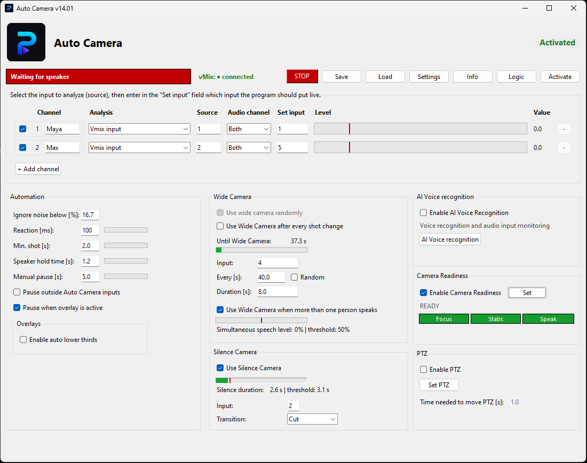

Automatyczne przełączanie
Obsługuje do 10 rozmówców i przełącza przypisane ujęcie vMix na podstawie aktywności mikrofonów, z regulacją czasu reakcji, podtrzymania i minimalnego czasu ujęcia.
Automatyzacja kamer w vMix
Auto Camera for vMix przełącza kamery zależnie od osoby, która aktualnie mówi. Pełna funkcjonalność jest dostępna za darmo bez limitu czasu do użytku niekomercyjnego i testów. Płatna subskrypcja jest potrzebna wyłącznie do zastosowań komercyjnych.

Jak to działa
Auto Camera for vMix wykorzystuje aktywność mikrofonów, aby zdecydować, która kamera powinna być na wizji. Dzięki temu miks wielokamerowy reaguje na rozmowę bez ciągłego ręcznego przełączania.
Skonfiguruj do 10 par mikrofon–kamera, wybierz źródło i kanał audio dla każdej osoby oraz przypisz wejście vMix, które ma być pokazane.
Dobierz próg szumów, próg aktywacji, czas podtrzymania, minimalny czas aktywności i minimalny czas ujęcia do rytmu rozmowy.
Auto Camera for vMix monitoruje skonfigurowane audio i przełącza przypisane ujęcie vMix. Może pracować na innym komputerze w tej samej sieci, automatycznie wyszukiwać vMix i ATEM oraz korzystać z szerokich ujęć i presetów PTZ.
Najważniejsze funkcje
Obsługuje do 10 rozmówców i przełącza przypisane ujęcie vMix na podstawie aktywności mikrofonów, z regulacją czasu reakcji, podtrzymania i minimalnego czasu ujęcia.
Auto Camera for vMix może działać na innym komputerze niż vMix i automatycznie odnaleźć vMix lub ATEM pracujące w tej samej sieci lokalnej.
Po ręcznym CUT program pauzuje na ustawiony czas. Może też wstrzymać automatykę przy overlayu lub po przejściu na input nieprzypisany do Auto Camera for vMix.
Używaj szerokiej kamery cyklicznie lub losowo, pomiędzy zbliżeniami i gdy mówi kilka osób. Przy ciszy program może przełączyć wybraną kamerę, np. szeroką lub prowadzącego.
Przypisuj belki podpisowe do rozmówców i kontroluj czas ich wyświetlania. Presety PTZ pozwalają automatycznie zmieniać nie tylko kamerę, ale również kadr.
AI Voice Recognition może identyfikować mówcę po charakterystyce głosu. Camera Readiness sprawdza, czy osoba mówi, obraz jest ostry i kamera jest statyczna, zanim ujęcie trafi na wizję.
Auto Camera for vMix nie ma ograniczeń funkcjonalnych ani limitu czasu w zastosowaniach niekomercyjnych i testach. Darmowa i komercyjna licencja korzystają z tych samych funkcji. Subskrypcja jest wymagana dopiero przy płatnych realizacjach i pomaga finansować dalszy rozwój aplikacji.
Pytania
Przełącza kamery zależnie od osoby, która aktualnie mówi, wykorzystując aktywność mikrofonów jako sygnał sterujący.
Dla realizatorów podcastów, wywiadów, debat i innych wielokamerowych produkcji w vMix.
Nie. Auto Camera for vMix ma pełną funkcjonalność i jest bezpłatna bez limitu czasu do użytku niekomercyjnego oraz testów.
Aktywna subskrypcja jest wymagana tylko wtedy, gdy używasz Auto Camera for vMix przy płatnych realizacjach, transmisjach dla klientów lub innej działalności zarobkowej. Funkcje programu pozostają takie same.
Do użytku niekomercyjnego i testów aplikacja jest bezpłatna i ma pełną funkcjonalność. Jeśli zacznie pracować przy płatnych realizacjach, wykup licencję komercyjną. Masz pomysł na usprawnienie albo chcesz omówić zastosowanie? Napisz do mnie.